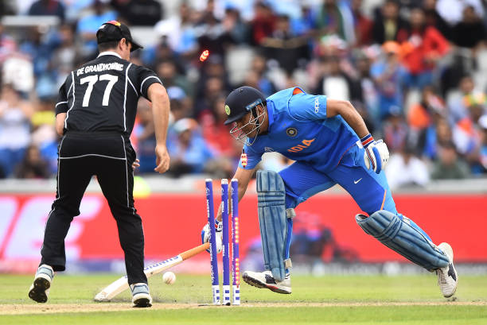
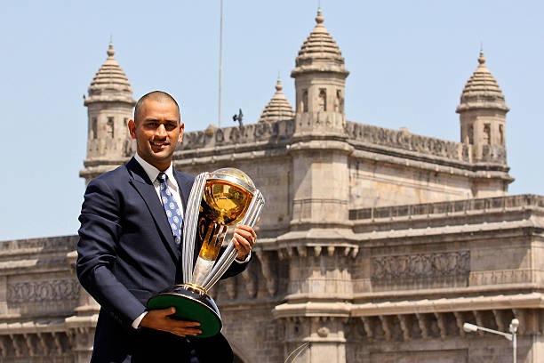
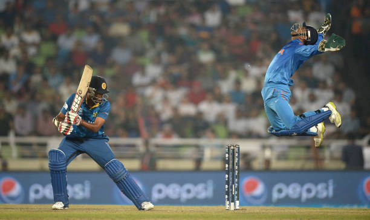
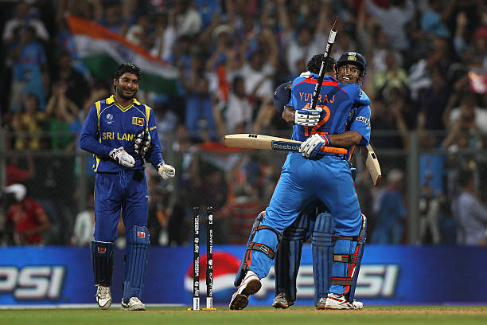
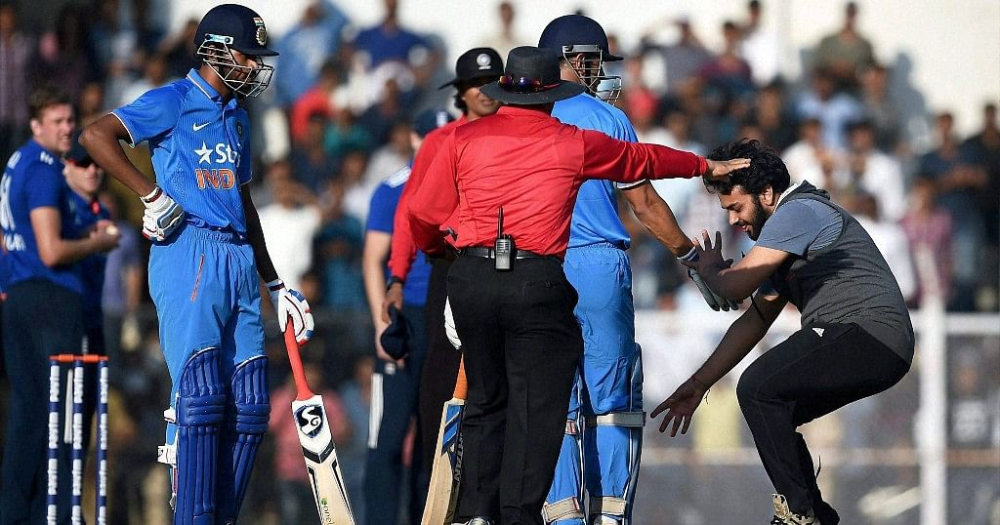
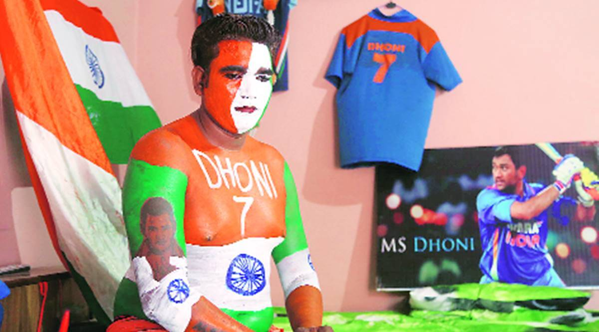
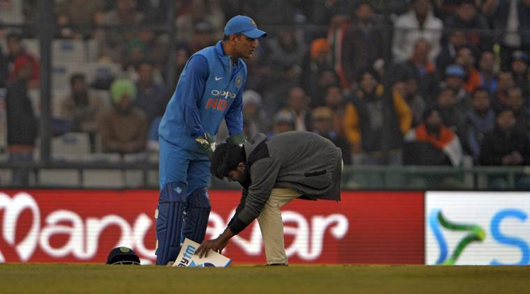
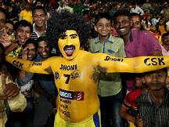
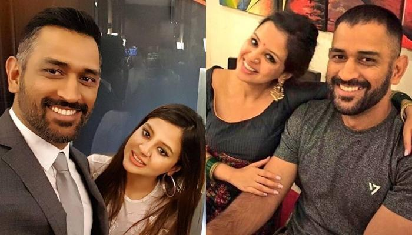

About Mahi
Mahendra Singh Dhoni born 7 July 1981), is a former Indian international cricketer who captained the Indian national team in limited-overs formats from 2007 to 2017 and in Test cricket from 2008 to 2014. Under his captaincy, India won the inaugural 2007 ICC World Twenty20, the 2010 and 2016 Asia Cups, the 2011 ICC Cricket World Cup and the 2013 ICC Champions Trophy. A right-handed middle-order batsman and wicket-keeper, Dhoni is one of the highest run scorers in One Day Internationals (ODIs) with more than 10,000 runs scored and is considered as greatest "finisher" in limited-overs formats. He is widely regarded as one of the greatest wicket-keeper batsmen and captains in the history of the game. He was also the first wicket-keeper to effect 100 stumpings in ODI cricket
Moments
   Jabra fans
   
Rap song by AKSHAT IS OFFBEAT
Family
Sakshi Dhoni - wife
Ziva singh Dhoni - Daughter
Retirement
MS Dhoni, one of the most iconic Indian cricketers of all time and the cricketer who made India fall in love with Twenty20 cricket, has confirmed his retirement from the international game at the age of 39. Dhoni captained India to victory in the inaugural T20 World Cup - then called the World T20 - in 2007, and to the one-day international World Cup on home soil in 2011, which Dhoni famously sealed with a six, finishing on 91 not out. He also led India to the 2013 Champions Trophy. In a remarkable international career that spanned 15 years, from 2004 to the 2019 World Cup semi-final, Dhoni scored 17,266 international runs. While he scored six hundreds in his 90 Tests at an average of 38, leading India to world number one from 2009-11, it is as a limited-overs cricketer that Dhoni will be best remembered. For vast swathes of his career, Dhoni seemed to have a preternatural ability to judge run chases, taking chases deep - almost theatrically so - and trusting himself to finish the job, just as he did that night at the Wankhede Stadium in 2011.